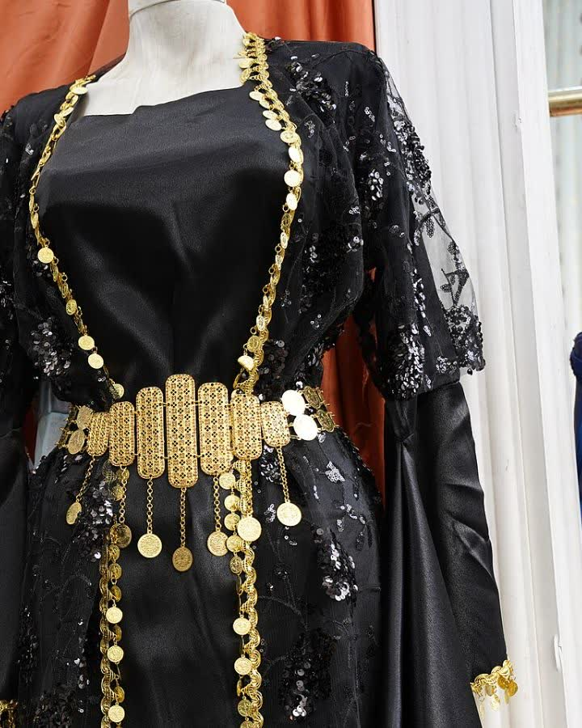
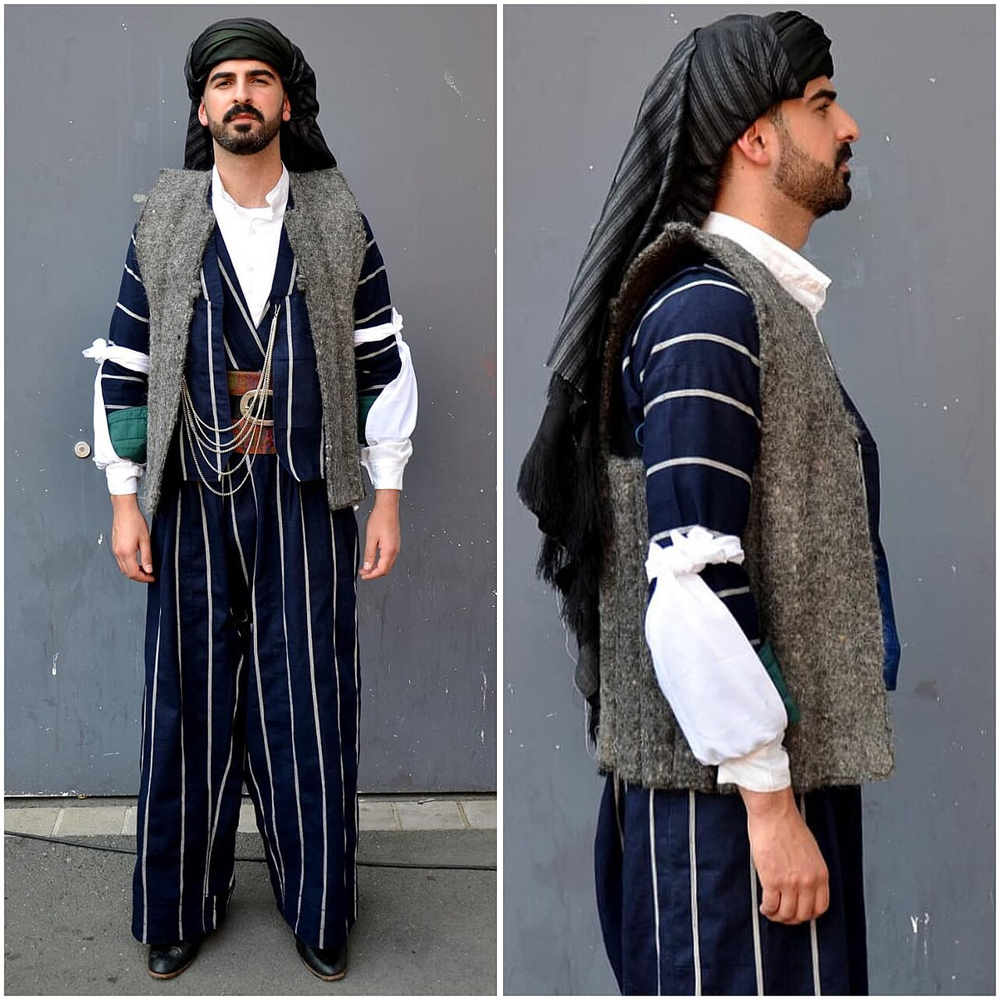

Kapak — Fotoğraf: Enasiqph · CC BY-SA 4.0 · KaynaklarSezon bitiyor, elbise dolaba giriyor; altı ay sonra çıkardığınızda koltuk altında sarımsı lekeler, omuzda askı çıkıntısı, kumaşta rutubet kokusu ve işlemede kopmuş birkaç boncuk buluyorsunuz. Bu yazıda bunların hiçbiriyle karşılaşmamak için gereken adımları sırayla bulacaksınız: kaldırmadan önceki temizlik, askı ve kılıf seçimi, hangi giysinin asılıp hangisinin katlanacağı, nem ve güve kontrolü, sararma ile renk solmasının gerçek nedenleri, asitsiz kağıtla katlama tekniği ve yıllık bakım takvimi. Anlatılanların çoğu ağır işlemeli elbiselerden ince şallara kadar tüm yöresel parçalar için geçerlidir.
Saklamanın Birinci Kuralı: Kirli Giysi Dolaba Girmez
Uzun süreli saklamada yapılan en pahalı hata, giysiyi temizlemeden kaldırmaktır. Gözle görünmeyen kalıntılar dolabın karanlığında sessizce çalışır ve zararın büyük kısmı ilk üç ay içinde başlar.
- Ter ve vücut yağı: Giysi çıkarıldığında görünmez, ancak havayla temas edip oksitlenir. Genellikle 3-6 ay içinde yaka, koltuk altı ve bel çevresinde sarımsı halkalar oluşur. Bu lekeler yerleştikten sonra çıkarılması çok zordur.
- Parfüm ve deodorant: İçerdikleri alkol ve tuzlar lifi zayıflatır; ipek ve viskon gibi hassas kumaşlarda matlaşmaya yol açar.
- Yemek ve şerbet kalıntısı: Kuruyunca görünmez hale gelen şeker, güve larvası ve gümüşböceği için doğrudan besin kaynağıdır.
- Kola ve nişasta: Kolalı kumaş böcekler için adeta hazır sofradır; uzun süreli saklamadan önce mutlaka durulanmalıdır.
Kaldırmadan önceki temizlik sırası şöyledir:
- Bakım etiketini okuyun. Etiket yoksa dikişin iç yüzünden görünmeyen bir noktada su ve deterjanla 5 dakikalık renk testi yapın.
- Payet, boncuk, sim veya metal işleme varsa yıkamak yerine kuru temizlemeyi tercih edin; temizleyiciye işlemenin cinsini mutlaka söyleyin.
- Yıkanabilir parçalarda durulamayı iki kez tekrarlayın. Deterjan kalıntısı zamanla sararmanın en yaygın nedenlerinden biridir.
- Yumuşatıcı kullanmayın. Yumuşatıcı liflerin üzerinde ince bir film bırakır; bu film uzun süreli saklamada koku ve leke tutar.
- Giysiyi tam kurutun. Yüzde bir-iki oranındaki kalıntı nem bile kapalı kılıf içinde küf için yeterlidir. Kalın işlemeli parçalar için düz zeminde havlu üzerinde 24-48 saat kuruma süresi ayırın.
- Ütü gerekiyorsa işlemenin üzerine ince pamuklu bez serin ve düşük ısıda çalışın. Payetli yüzeye doğrudan ütü değdirmek plastik payeti kalıcı olarak deforme eder.
Askı mı, Katlama mı? Giysi Tipine Göre Karar Tablosu
Bu kararın tek ölçütü giysinin ağırlığıdır. Askıda duran her giysi kendi ağırlığıyla aşağı doğru çekilir; ağırlık omuz dikişinde toplanır. Yaklaşık 1,5 kilogramın üzerindeki işlemeli elbiseler asıldığında omuz ve göğüs bölgesindeki lifler zamanla uzar, elbise omuzdan sarkar ve bu deformasyon geri dönmez.
| Giysi tipi | Askı mı, katlama mı? | Kılıf | Kontrol sıklığı |
|---|---|---|---|
| Hafif pamuklu yöresel elbise | Geniş omuzlu askı | Pamuklu nefes alan kılıf | 6 ayda bir |
| Ağır payetli veya boncuk işlemeli elbise | Katlama (yatay, kutuda) | Asitsiz kağıt + pamuklu bez | 3 ayda bir |
| İşlemeli yelek, cepken | Dolgulu askı veya katlama | Pamuklu kılıf | 6 ayda bir |
| Şalvar, geniş paça pantolon | Katlama | Pamuklu torba | 6 ayda bir |
| Şal, poşu, baş örtüsü | Rulo sarma | Asitsiz kağıt rulo | Yılda bir |
| Yün veya keçe parçalar | Katlama (kutuda) | Lavanta keseli pamuklu kutu | 3 ayda bir |
| Metal takı ve kemer tokası | Ayrı kutu | Kadife veya koruma bezi | 6 ayda bir |
Ağır işlemeli parçalar için katlama kuralının en net örneği kıras û fistan tipi elbiselerdir: metal iplik ve boncuk yoğunluğu yüksek olduğundan bu elbiseler kutu içinde yatay saklandığında çok daha uzun ömürlü olur. Buna karşılık ince dokuma şal û şepik takımları geniş omuzlu askıda formunu daha iyi korur.
Doğru Askı Seçimi: Tel Askının Verdiği Zarar
Tel askı, kuru temizlemeciden geldiği gibi dolapta unutulduğunda üç ayrı hasar üretir: omuzda sivri çıkıntı, kaplaması çizildiğinde nemle birlikte pas lekesi ve ağırlık altında öne doğru bükülerek asimetrik omuz. Yöresel kıyafetlerin çoğu geniş omuz kesimli olduğundan bu hasar hemen fark edilir.
| Askı tipi | Güçlü yönü | Riski | Uygun olduğu giysi |
|---|---|---|---|
| Tel askı | Ucuz, yer kaplamaz | Omuzda çıkıntı, pas lekesi, bükülme | Uzun süreli saklama için uygun değil |
| İnce plastik askı | Hafif, ucuz | Dar temas yüzeyi, ağır kumaşta çöküntü | Hafif bluz, ince gömlek |
| Geniş omuzlu ahşap askı (4-5 cm) | Ağırlığı geniş alana yayar | Cilasız ahşap asit salabilir | Ceket, yelek, kalın elbise |
| Kumaş kaplı dolgulu askı | En nazik temas, kayma yapmaz | Dolapta fazla yer kaplar | İnce askılı, dantelli, hassas parçalar |
| Klipsli pantolon askısı | Paçayı düz tutar | Klips izi bırakır | Şalvar (klips altına kağıt konularak) |
Ahşap askı seçerken cilalı veya sedir ağacından olanı tercih edin. İşlenmemiş bazı ahşaplar zamanla asidik buhar salar ve temas ettiği bölgede kumaşı sarartabilir. Elbisenin bel bandında ince askı ipleri varsa ağırlığın bir kısmını bu iplere aktarın; böylece omuz dikişi rahatlar.
Kılıf Seçimi: Naylon Poşet Neden En Büyük Hatadır?
Kuru temizlemeden gelen şeffaf naylon poşet taşıma amaçlıdır, saklama amaçlı değildir. Naylon hava geçirmez; içeride kalan nem dışarı çıkamaz ve kumaşın yüzeyinde yoğuşur. Ayrıca zamanla plastikleştirici maddeler salarak kumaşa sarı bir ton verebilir. Giysiyi eve getirir getirmez bu poşeti çıkarın.
- Pamuklu (muslin) kılıf: Nefes alır, tozu tutar, ışığı keser. Uzun süreli saklamanın standart çözümüdür.
- Beyaz keten örtü: Boyasız ve yıkanmış olması şartıyla iyi bir alternatiftir; boyalı kumaş nemle birlikte renk verebilir.
- Asitsiz karton kutu: Katlanan ağır parçalar için en güvenli seçenektir. Kutuyu tamamen doldurmayın, üstte 3-4 cm boşluk bırakın.
- Vakumlu poşet: Yün, ipek ve işlemeli kumaşlarda kullanmayın. Basınç altında lifler ezilir, kalıcı kırışıklık ve payet kırığı oluşur.
Nem ve Rutubet Kontrolü
Küf ve leke sorunlarının neredeyse tamamı nemden kaynaklanır. Tekstil saklamak için genel olarak önerilen aralık %45-55 bağıl nem ve 15-22 °C sıcaklıktır. Bağıl nem %60'ı aştığında küf riski hızla yükselir; %35'in altına indiğinde ise doğal lifler kurur ve kırılganlaşır.
- Dolabı dış duvara bitişik konumdan uzak tutun. Dış duvarlar kışın yoğuşma yapar.
- Dolabın arka paneliyle duvar arasında 3-5 cm hava boşluğu bırakın.
- Kapalı saklama kaplarına silika jel koyun. Pratik bir ölçü olarak her 20-30 litrelik kap için 50-100 gram silika jel yeterli olur. Nem çekince renk değiştiren tipler kontrolü kolaylaştırır.
- Silika jel paketlerini 6 ayda bir kontrol edin; doymuş paketleri fırında düşük ısıda kurutup yeniden kullanabilirsiniz.
- Bodrum katı, çatı arası ve banyoya bitişik dolaplar uzun süreli saklama için uygun değildir.
- Giysiyi doğrudan zemine değil, en az 15 cm yükseklikte bir rafa yerleştirin.
Kokuyu bastırmak sorunu çözmez. Dolaptan rutubet kokusu geliyorsa parfüm veya oda kokusu sıkmak yerine kaynağı arayın: kapalı kılıf, yetersiz kuruma veya duvar nemi.
Güve Önleme: Naftalin Yerine Ne Kullanılır?
Güve kelebeği kumaşa zarar vermez; zarar veren, yumurtadan çıkan larvadır. Larva yün, kaşmir, keçe, ipek gibi hayvansal lifleri ve bu liflerin üzerindeki ter, yağ, yemek kalıntılarını yer. Karanlık, hareketsiz ve az havalandırılan dolaplar en riskli ortamdır.
Naftalin etkili olsa da keskin kokusu kumaşa siner, kapalı odada solunması sağlıksızdır ve küçük çocukların bulunduğu evlerde risk oluşturur. Yerine kullanılabilecek seçenekler:
- Kurutulmuş lavanta keseleri: Kokusu uçtukça etkisi azalır; 3-4 ayda bir keseyi hafifçe sıkarak canlandırın, yılda bir içeriği yenileyin. Keseyi kumaşa doğrudan değdirmeyin, yağı leke bırakabilir.
- Sedir ağacı blok veya topları: Etkisi yüzey kokusundan gelir. 6 ayda bir ince zımparayla (yaklaşık 220 kum) hafifçe zımparalayınca kokusu yenilenir.
- Karanfil, defne yaprağı, biberiye: Bez kesede kullanıldığında destekleyici etki sağlar; tek başına yeterli sayılmaz.
- Fiziksel bariyer: Aslında en etkili yöntem budur. Ağzı sıkıca kapatılmış pamuklu kılıf veya kapaklı kutu, larvanın kumaşa ulaşmasını engeller.
- Soğuk şoku: Şüpheli küçük parçaları poşete koyup dondurucuda 72 saat bekletmek yumurtaları etkisiz hale getirir.
Sararma Neden Olur, Nasıl Önlenir?
Beyaz ve krem zeminli yöresel kumaşlarda en sık görülen sorun sararmadır. Nedenleri genellikle şunlardır:
- Görünmez ter ve yağ kalıntısı: Oksitlenerek sarıya döner. Çözüm: kaldırmadan önce mutlaka temizlik.
- Deterjan ve yumuşatıcı kalıntısı: Lif üzerinde kalan kimyasal zamanla renk değiştirir. Çözüm: ikinci durulama.
- Asitli kağıt ve karton: Normal gazete kağıdı ve standart karton kutular asit içerir, temas ettiği yerde kahverengi çizgiler bırakır. Çözüm: pH değeri yaklaşık 7-8,5 aralığında asitsiz kağıt.
- Cilasız ahşap teması: Rafın üstüne pamuklu bez serin.
- Klor bazlı ağartıcı: Doğal liflerde uzun vadede sarartıcı etki yapar; işlemeli parçalarda hiç kullanılmamalıdır.
Renk Solmasını Önleme
Solmanın başlıca nedeni ışıktır ve etki birikimlidir; bir günde fark edilmez, üç yılda fark edilir. Doğal boyalarla renklendirilmiş dokumalar ışığa sentetik boyalardan daha duyarlıdır.
- Giysiyi doğrudan güneş gören pencere önünde asmayın. Dolapta bile olsa cam kapaklı vitrinler risk taşır.
- Askıda saklanan parçaların üzerine mutlaka opak, açık renkli pamuklu kılıf geçirin.
- Havalandırma sırasında gölgeyi tercih edin; doğrudan güneş yerine hava akımı olan gölgeli bir alan yeterlidir.
- Koyu kırmızı, lacivert ve mor tonlarda ilk yıkamalarda renk akması olabilir. Bu tip parçaları açık renkli parçalarla aynı kılıfa koymayın.
- Katlarken açık ve koyu renk yüzeylerin uzun süre birbirine baskı yapmasını önlemek için araya beyaz asitsiz kağıt yerleştirin.
Katlama Tekniği: Adım Adım
Kat yerleri, uzun süreli saklamada liflerin en çok yorulduğu noktalardır. Aynı çizgide yıllarca duran bir kat, önce parlar sonra o hattan yırtılır. Doğru yöntem şudur:
- Geniş ve temiz bir yüzeyin üzerine beyaz pamuklu bir örtü serin.
- Giysiyi ters çevirin. İşleme ve payet böylece içeride kalır, sürtünmeye karşı korunur.
- Her kat hattının arasına yumuşatılmış asitsiz kağıt koyun. Kat sayısını en aza indirin: iki-üç kat ideal, altı kat fazladır.
- Kol içlerini ve omuz oyuklarını buruşturulmuş asitsiz kağıtla hafifçe doldurun. Bu dolgu, sert kırışıklık yerine yumuşak kıvrım oluşturur.
- Katlanmış giysiyi kutunun tabanına düz yerleştirin. Üst üste en fazla iki-üç parça koyun; en ağır olan en altta olsun.
- Kutuyu tamamen doldurmayın; kumaşın nefes alması için üstte boşluk kalsın.
- 6 ayda bir kat yerlerini değiştirin. Giysiyi açıp farklı bir hattan katlamak, tek bir çizgide oluşacak kalıcı hasarı önler.
Şal, kuşak ve baş bağlama parçaları için katlama yerine rulo yöntemi daha uygundur: karton bir rulonun üzerine asitsiz kağıt sarın, ardından kumaşı gergin olmayacak şekilde bu rulonun üzerine sarın. Poşu gibi ince dokumalar bu yöntemle kat izi almadan yıllarca saklanabilir. Metal tokalar, gümüş işlemeler ve aksesuarlar ise kumaşa temas etmeyecek şekilde ayrı kutularda tutulmalıdır; metal oksitlendiğinde temas ettiği kumaşta kalıcı yeşilimsi leke bırakabilir.
Yılda Bir Havalandırma ve Kontrol Rutini
Uzun süre hiç açılmayan bir kutu, içindeki giysi için güvenli değildir. Yılda en az bir kez, tercihen ilkbaharda tüm parçaları çıkarıp kontrol edin:
- Giysiyi gölgeli ve hava akımı olan bir yerde 2-3 saat açık bırakın.
- Koltuk altı, yaka ve etek ucunu ışığa tutarak sararma başlangıcı olup olmadığına bakın.
- Kumaş yüzeyinde küçük delik, ipeksi ağ kalıntısı veya toz benzeri birikinti arayın; bunlar güve larvası belirtisidir.
- Dikiş yerlerini ve işleme bağlantılarını kontrol edin; gevşemiş bir boncuk şimdi tutturulursa on tanesi kaybolmaz.
- Kılıfı ve asitsiz kağıtları yenileyin, kutunun içini nemli olmayan bir bezle silin.
- Lavanta keselerini ve silika jeli değiştirin, ardından kat yerlerini değiştirerek geri katlayın.
| Dönem | Yapılacak işlem |
|---|---|
| Sezon sonu | Temizlik, tam kurutma, doğru kılıfla yerleştirme |
| 3 ayda bir | Ağır işlemeli ve yünlü parçalarda hızlı göz kontrolü |
| 6 ayda bir | Kat yerlerini değiştirme, silika jel kontrolü, sedir yenileme |
| Yılda bir | Havalandırma, dikiş ve işleme kontrolü, kılıf ve kağıt yenileme |
| 2-3 yılda bir | Hassas parçalarda profesyonel temizlik değerlendirmesi |
Bu rutini takviminize not almak, en az kullandığınız malzemeler kadar işe yarar. Kumaş ve işleme terimlerinin karşılıklarını merak ederseniz sözlük bölümüne, sık sorulan bakım konuları için sıkça sorulan sorular sayfasına, benzer bakım yazıları için ise blog bölümüne göz atabilirsiniz.
Sık Yapılan Beş Hata
- Kuru temizleme poşetiyle saklamak: Nefes almayan naylon, küfün ve sararmanın en hızlı yoludur.
- Ağır elbiseyi ince askıda asmak: Omuz dikişi uzar, deformasyon geri dönmez.
- Gazete kağıdı kullanmak: Mürekkep ve asit kumaşa geçer.
- Dolabı tıka basa doldurmak: Hava dolaşımı durur, kırışıklık kalıcılaşır. Askılar arasında en az 2-3 cm boşluk bırakın.
- Yılda bir bile açmamak: Erken fark edilen küçük bir güve izi, bir yıl sonra onarılamaz bir delik olur.
Bu adımlar ilk bakışta uzun görünse de tamamı yılda birkaç saat tutar. Karşılığında, özenle dokunmuş ve işlenmiş bir giysi bir sonraki kutlamaya ilk günkü duruşuyla çıkar.
Sıkça Sorulan Sorular
Yöresel kıyafeti kuru temizlemeden gelen naylon poşette saklayabilir miyim?
Hayır. O poşet yalnızca taşıma içindir; hava geçirmediği için içeride kalan nem dışarı çıkamaz ve kumaş yüzeyinde yoğuşur. Ayrıca naylon zamanla kumaşa sarımsı bir ton verebilir. Giysiyi eve getirir getirmez poşeti çıkarıp pamuklu bir kılıfa alın.
Ağır payetli elbise askıda mı katlanarak mı saklanmalı?
Katlanarak saklanmalıdır. Yaklaşık 1,5 kilogramın üzerindeki işlemeli elbiseler askıda kendi ağırlığıyla aşağı çekilir; omuz dikişindeki lifler uzar ve bu deformasyon geri dönmez. Elbiseyi ters çevirip kat aralarına asitsiz kağıt koyarak kutuda yatay saklayın.
Güveye karşı naftalin yerine ne kullanabilirim?
Kurutulmuş lavanta keseleri ve sedir ağacı blokları en yaygın alternatiflerdir. Lavantayı yılda bir yenileyin, sedir bloğunu 6 ayda bir ince zımparayla hafifçe zımparalayarak kokusunu canlandırın. En etkili yöntem yine de fiziksel bariyerdir: ağzı kapalı pamuklu kılıf veya kapaklı kutu larvanın kumaşa ulaşmasını engeller.
Dolapta ideal nem ve sıcaklık ne olmalı?
Tekstil için genellikle %45-55 bağıl nem ve 15-22 °C aralığı önerilir. Bağıl nem %60'ı aştığında küf riski hızla artar, %35'in altında ise lifler kuruyup kırılganlaşır. Kapalı kutularda her 20-30 litre hacim için 50-100 gram silika jel kullanmak dengeyi korumaya yardımcı olur.
Kıyafetler neden sararıyor, nasıl önlerim?
En yaygın nedenler görünmeyen ter ve vücut yağının oksitlenmesi, kumaşta kalan deterjan kalıntısı ve asitli kağıt veya cilasız ahşapla temastır. Giysiyi kaldırmadan önce mutlaka temizleyin, durulamayı iki kez yapın ve kat aralarında yalnızca asitsiz kağıt kullanın. Rafın üstüne pamuklu bez sermek ahşap temasını da keser.
Uzun süre saklanan giysiyi ne sıklıkla açıp kontrol etmeliyim?
Yılda en az bir kez, tercihen ilkbaharda. Giysiyi gölgede 2-3 saat havalandırın, sararma başlangıcı ve güve izi olup olmadığını kontrol edin, gevşemiş boncuk veya dikişleri onarın. Aynı fırsatta kat yerlerini değiştirerek tek bir hatta kalıcı iz oluşmasını önleyin.
Kültürden Kareler
